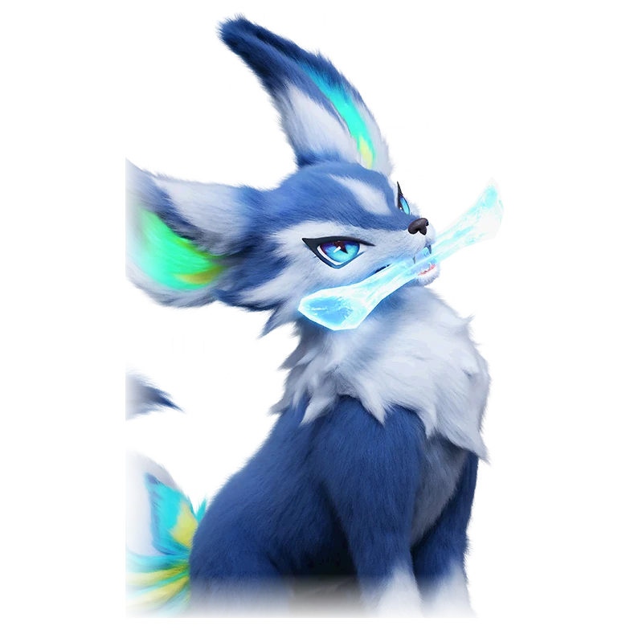

รายชื่อ Aniimo › #043

จิ้งจอกธารน้ำแข็ง (Fenrier)
#043ธาตุน้ำแข็งGammaDPSTier D
ไม่ยอมให้ความอ่อนโยนแบบสัตว์เลี้ยงมาทำให้ใจอ่อน มันนำครอบครัวออกล่าด้วยใบมีดน้ำแข็ง
ดูรายละเอียดเต็ม ร่างพิเศษ และร่างเปล่งประกายค่าสถานะพื้นฐาน
| HP | 86 |
|---|---|
| ATK | 105 |
| P.DEF | 68 |
| M.DEF | 68 |
| REGEN | 81 |
| BREAK | 45 |
สกิล
| โจมตีปกติ | ATK น้ำแข็ง ใช้พลังน้ำแข็งโจมตีเป้าหมายระยะประชิด |
| สกิล 1 | Ice Strikes น้ำแข็ง พุ่งไปข้างหน้าแล้วหมุนตัวสร้างสนามเวท ยิงใบมีดน้ำแข็ง 3 ใบ 3 ครั้ง ทำดาเมจและติด [Ice Debuff] 5 สแต็ก |
| สกิล 2 | Boomerang Blade น้ำแข็ง ขว้างใบมีดน้ำแข็งไปข้างหน้า ทำดาเมจเป้าหมายในระยะและติด [Ice Debuff] ใบมีดใช้พลังงานต่อเนื่องขณะหมุน กดปุ่มสกิลอีกครั้งเพื่อเรียกกลับ |
สายวิวัฒนาการ
- จิ้งจอกโครงฟ้า → จิ้งจอกธารน้ำแข็ง (Aniimo เลเวล 24)
- จิ้งจอกธารน้ำแข็ง → จิ้งจอกดาบเหมันต์ (Aniimo เลเวล 34)
จุดเกิด
- Beast Fang Ridge Lv. 30–35
- Driftwise Meadow Lv. 50–55
Held Item ที่แนะนำ
- Ferocious Fang Aniimo ที่สวมใส่ได้ ATK เพิ่ม 0.7 ต่อเลเวล
งานใน Homeland
งานธาตุน้ำแข็ง Lv.2, ขนของ Lv.2